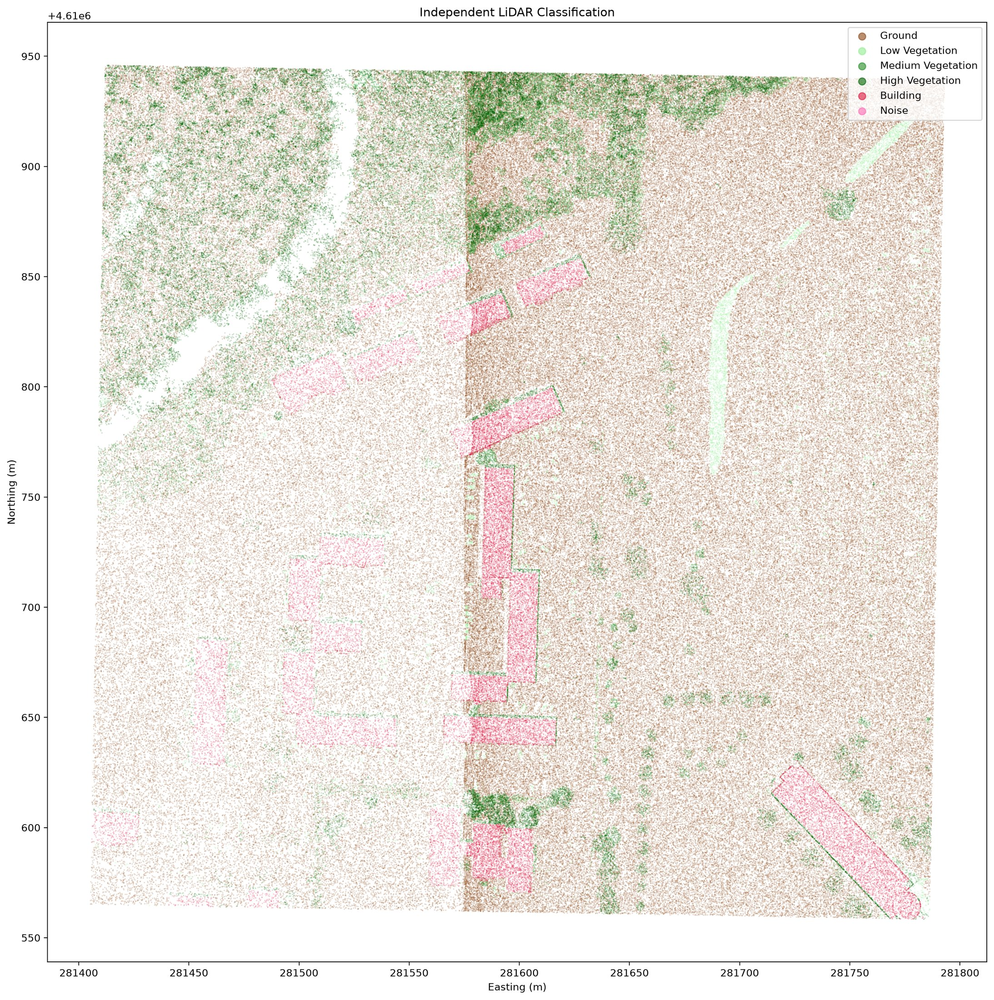
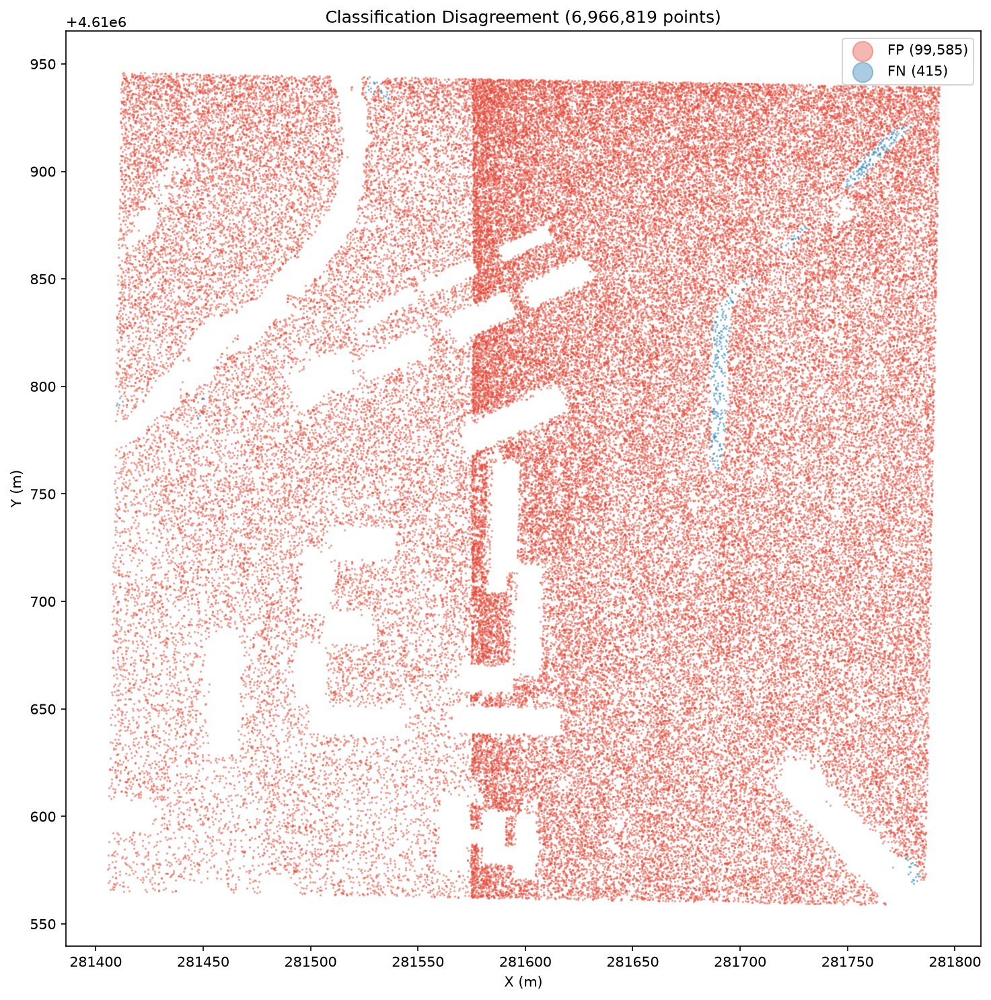
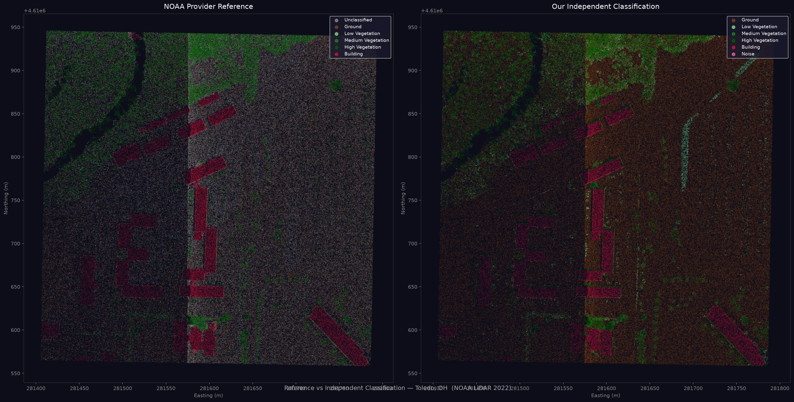
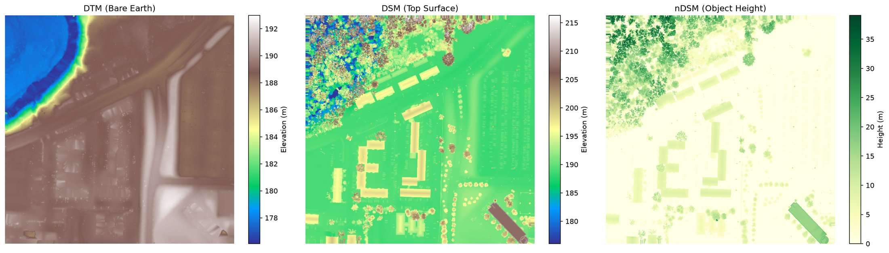
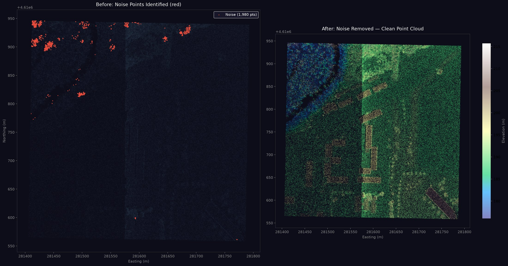
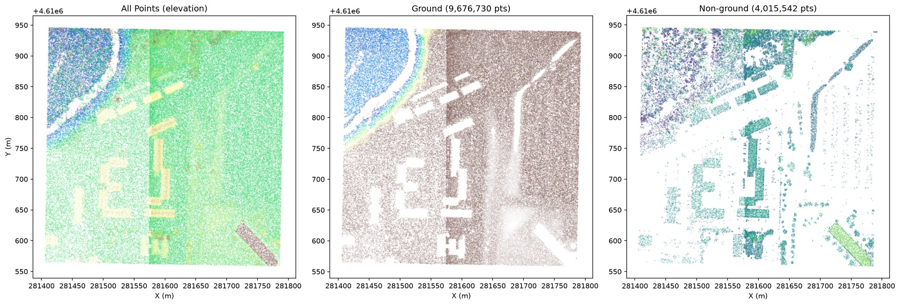
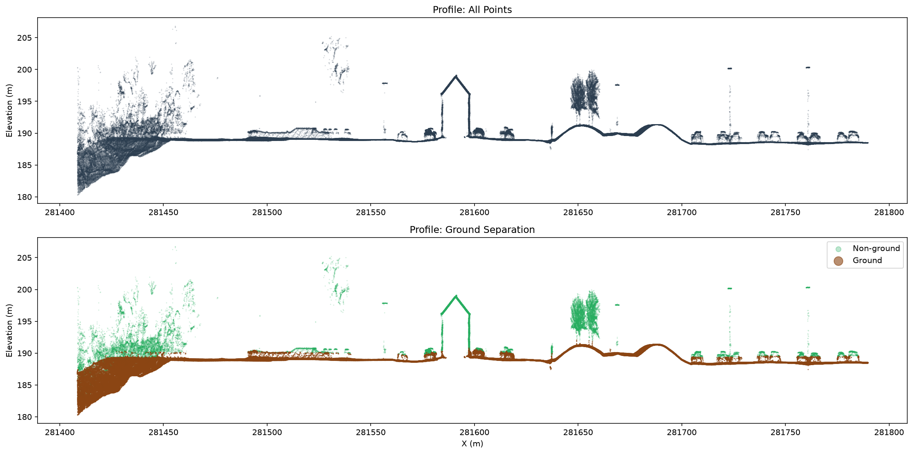
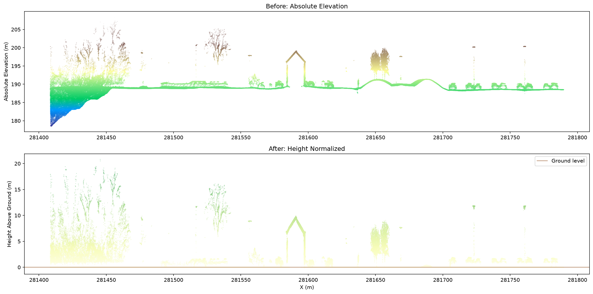

An airborne LiDAR survey produces millions of 3D points, but without labels telling you what each point hit. This study takes 13.7 M raw returns over Toledo, Ohio and classifies them into ground, buildings and vegetation using only their geometry. The provider's own labels were sealed before processing and opened only at the end to score the result.
The 3D viewer on the right cycles through each pipeline stage: raw elevation colours, noise removal, ground separation, and the final classified result. Building F1: 0.92.
| Class | Precision | Recall | F1 |
|---|
NOAA left 50.5% unclassified. This pipeline labels them ground.







